Labour Supply and Income Support Programs
EC306- Wages and Employment
Justin Smith
Wilfrid Laurier University
Fall 2026

Goals of This Section
Goals of This Section
In this section we will:
- Describe the main income support programs in Canada
- Show the effect of these programs on work decisions using the labour supply model
- Demogrants, social assistance, negative income tax, wage subsidies, refundable tax credits
- Examine statistical evidence for the model predictions
Income Maintenance Programs
Overview of Income Maintenance Programs
- Represent about 10% of GDP in Canada
- Primary aims:
- Raise income of specific groups (parents, elderly)
- Supplement low wages
- Major programs: child benefits, employment insurance, social assistance, pensions
Key Challenge
Balancing income support with work incentives
Government Transfers in Canada
In 2017, 83% of families received some form of government transfer:
| Program | % Receiving | Average Amount |
|---|---|---|
| Federal Child Benefits | 20.2% | $6,314 |
| Employment Insurance | 14.0% | $8,352 |
| Social Assistance | 11.3% | $8,367 |
| Old Age Security | 25.1% | $8,566 |
| CPP/QPP | 32.4% | $10,092 |
Issues in Program Design
Universal vs. Targeted Programs
- Universal: easy to implement but expensive
- Targeted: benefits only those in need but costly to administer
Work Disincentives
- Some programs reduce incentive to work
- Example: welfare benefits can encourage labour force dropout for those with strong preference for leisure
Permanent vs. Transitory Income Loss
- Different situations require different program designs
- Temporary layoff → short-term support
- Long-term disability → longer support + reintegration costs
Think About It
If 83% of Canadian families receive some form of government transfer, why is program design so important? What happens if a program is too generous or too stingy?
Demogrants, Welfare, Wage Subsidies
Four Standard Income Support Programs
We will examine four policy approaches:
- Demogrants - Fixed payment to all regardless of income/employment
- Welfare - Lump-sum payment for non-workers, reduced dollar-for-dollar with earnings
- Negative Income Tax (NIT) - Welfare payment that decreases at rate < 100% with earnings
- Wage Subsidies - Addition to the wage rate
Demogrant: Theory
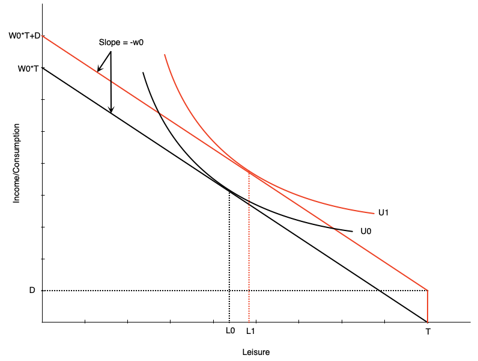
How it works:
- Unconditional lump sum transfer \(D\)
- Shifts budget line up parallel
- Wage unchanged → pure income effect
Labor supply impact:
- If leisure is normal → optimal leisure rises
- Reduces hours worked
- May induce non-participation
Work Incentive Effect
Unambiguously negative
Demogrant: Canadian Example
Universal Child Care Benefit (UCCB)
- Paid to families with children under 18
- $160/month per child under 6
- $60/month per child aged 6-17
- Replaced in 2016 by Canada Child Benefit (CCB)
- More targeted to low/middle income families
Evidence (Schirle, 2015)
UCCB reduced labour supply of women with children under 6 by ~3.2 percentage points for low-educated married women
Welfare: Overview
Welfare = Social/Income Assistance in Canada
- Lump-sum payment to non-workers
- Reduced dollar-for-dollar with earned income
Historical Criticism
Creates negative work incentives for some, but must balance against need for income support
Welfare: Budget Constraint
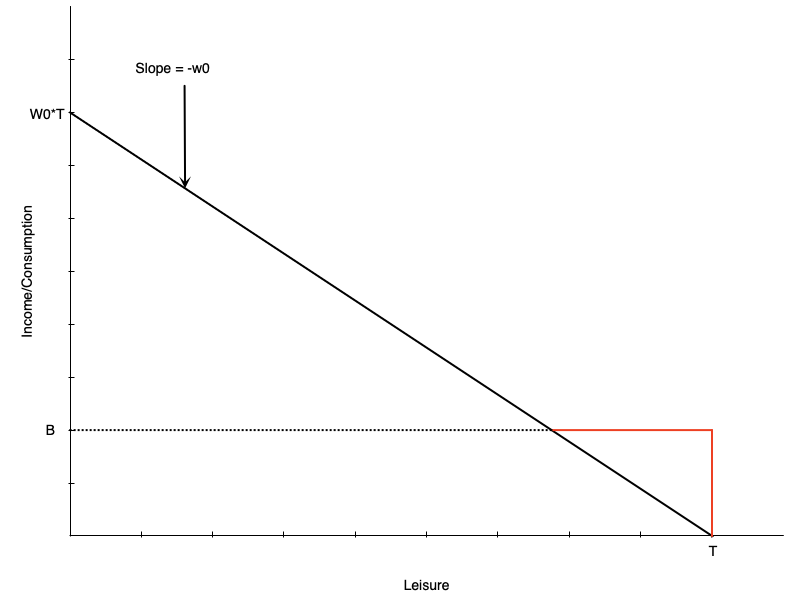
Budget line structure:
- Black line: original budget (leisure at \(L_0\))
- Red then black: with welfare benefit \(B\)
Key features:
- Benefit \(B\) at zero hours of work
- Reduced $1 for each $1 earned
- Equivalent to 100% tax rate on earnings
- Income constant at \(B\) until earned income equals benefit
- After that, earn wage \(w_0\) per hour worked
Welfare: No Effect Case
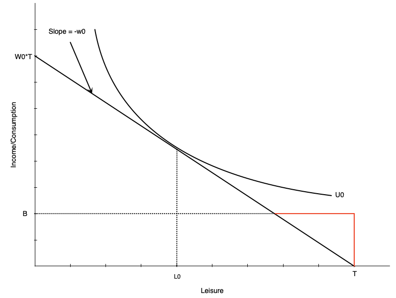
For some workers, welfare has no effect:
- Person working \(H_0\) hours before benefit
- Still maximizes utility at \(H_0\) hours after
- Generally occurs with people already working many hours
Welfare: Work Disincentive Case
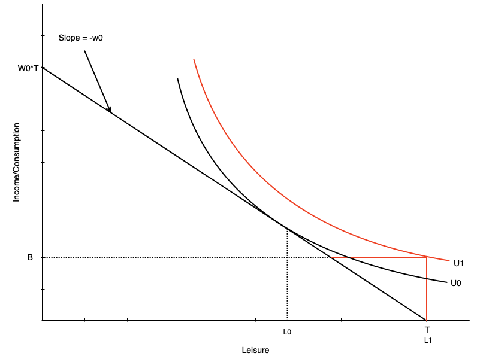
Others face strong work disincentive:
- Person chooses zero hours after welfare benefit
This occurs when:
- Welfare benefit is generous
- Individual places high value on leisure
Warning
This is the problematic effect of welfare programs
Discussion
Why might someone who was working 20 hours per week before welfare was introduced choose to stop working entirely, while someone working 40 hours per week continues to work the same amount?
Combating Work Disincentives
Policy options:
- Reduce benefit level
- But may not provide adequate support
- Increase wages
- Through minimum wages, subsidies, training, unions
- Can be expensive and may reduce labour demand
- Change preferences
- Alter attitudes toward work/leisure
- Difficult to achieve
- Negative income tax
- Reduce tax-back rate on earnings
- Discussed next…
Welfare: Evidence from Quebec
Natural experiment: Welfare benefit structure changed in 1989
Before 1989:
- Age-based benefits for singles/couples with no kids
- Under 30: $185/month
- 30 and over: $507/month
Results at age 30:
- Much longer time on welfare
- Lower employment rates
Note
Turning 30 created a large discontinuous jump in benefits
Negative Income Tax: Overview
What is NIT?
- Welfare program where benefit reduced at rate < 100% of earnings
- Example: $10,000 benefit reduced by 50¢ per dollar earned
Advantages
Provides income support with fewer work disincentives. Still maintains incentive to work since benefit reduces slowly.
Also known as: Guaranteed Annual Income (GAI) or Basic Income
Negative Income Tax: Budget Constraint
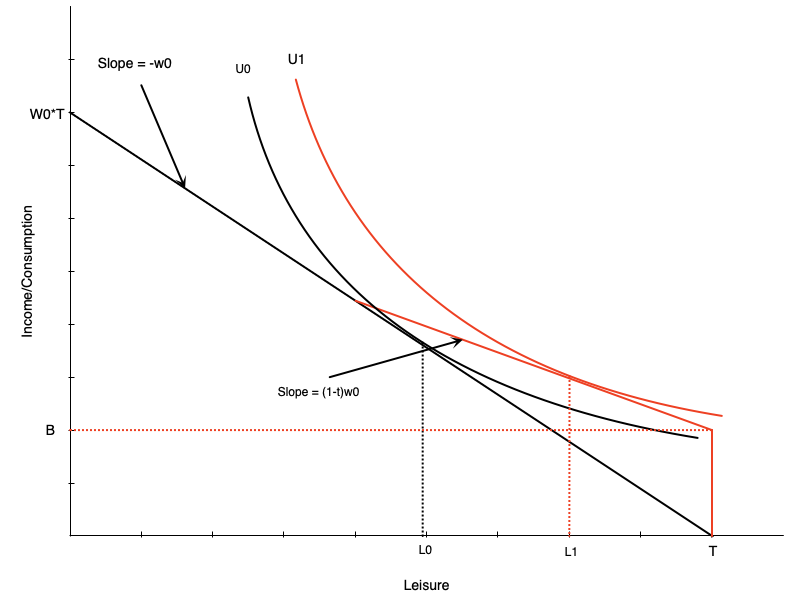
NIT has two components:
- Benefit \(B\) at zero hours of work
- Tax rate \(t\) on earned income (until earned income equals benefit)
Effect on labour supply:
- Pivots budget line up vs. pure welfare
- Work hours reduced from \(H_0\) to \(H_1\)
- Person still works some hours
Important
Work disincentive less than pure welfare
Negative Income Tax: Income and Substitution Effects
Income effects:
- Benefit increases non-labour income → increases leisure ↑
- Tax has negative income effect → reduces leisure ↓
- Net: benefit effect dominates → leisure ↑
Substitution effect:
- Tax rate reduces effective wage
- Makes leisure relatively cheaper → reduces work hours ↓
Overall Effect
Negative effect on work hours, but smaller than pure welfare
Negative Income Tax: Math
The budget constraint with NIT:
\[ C = \begin{cases} wh + B - twh, & \text{if } B - t wh \geq 0 \\ wh, & \text{otherwise} \end{cases} \]
Interpretation:
- Consumption = earned income (\(wh\)) + net benefit (\(B - twh\)) if net benefit > 0
- Otherwise just earned income (\(wh\))
Break-even point: benefit reaches zero when \(wh = \frac{B}{t}\)
MINCOME: Manitoba’s NIT Experiment
Program details (1970s):
- Randomized controlled trial
- Treatment group received NIT
- Control group did not
- Conducted in Dauphin (saturated - everyone got NIT) and Winnipeg
- 7 treatment groups with different benefit levels and tax rates
- Ended in 1979 due to political changes
MINCOME Treatment Groups
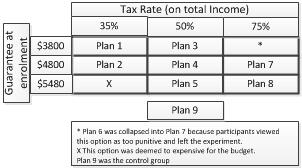
Source: Wikipedia
MINCOME: Results
Labour supply effects:
- Small decline in hours worked
- Mainly mothers of newborns
- Women in two-parent families
- No significant decline for men
Health outcomes:
- Fewer hospitalizations and doctor visits
- Especially for mental health and accidents
Education:
- Increase in adolescents finishing high school
Wage Subsidies: Theory
What is a wage subsidy?
- Payment to workers that increases their wage rate
- Example: $5/hour subsidy increases $15/hour wage to $20/hour
Effect on budget constraint:
- Budget line pivots upward
Labour supply effects:
- Income effect → increases leisure ↑
- Substitution effect → decreases leisure ↓
Warning
Overall effect on work hours is ambiguous
Wage Subsidies: Diagram
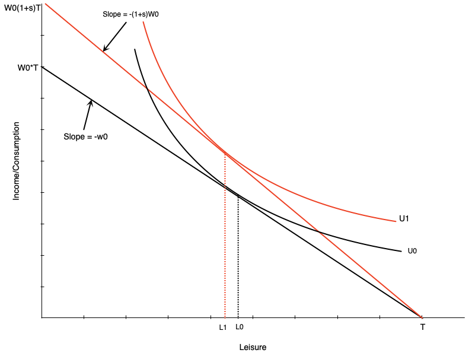
Budget line pivots up with subsidy
- Graph shows person working more
- But effect is theoretically ambiguous
- Income and substitution effects work in opposite directions
Wage Subsidies: Policy Implications
Advantages
- Less negative work incentives than welfare or NIT
- No reduction in effective wage rate
Disadvantages
- Do not provide income support to non-workers
- May not help those in most need
In Canada:
- Pure wage subsidies mostly go to employers
- Unclear if any benefits passed on to workers
Think About It
A negative income tax reduces the benefit as you earn more, while a wage subsidy increases your pay for each hour worked. Which program would you expect to have a larger positive effect on labour force participation among non-workers, and why?
Tax Credits: Overview
Two types of tax credits:
- Non-refundable: Can reduce tax owed to zero (but not below)
- Refundable: Can reduce tax owed below zero (results in payment)
Income Maintenance Programs via Refundable Tax Credits
- Canada Worker Benefit (CWB) - Canada
- Earned Income Tax Credit (EITC) - US
Tax Credits: Budget Constraint
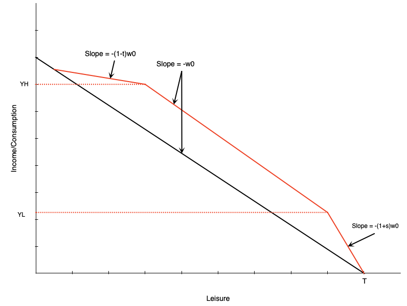
Three segments:
- Phase-in: Subsidy proportional to earned income
- Plateau: Maximum benefit level
- Phase-out: Benefit reduced with earned income
Combines elements of:
- Wage subsidy (phase-in)
- Demogrant (plateau)
- NIT (phase-out)
Tax Credits: Effect in Plateau Range
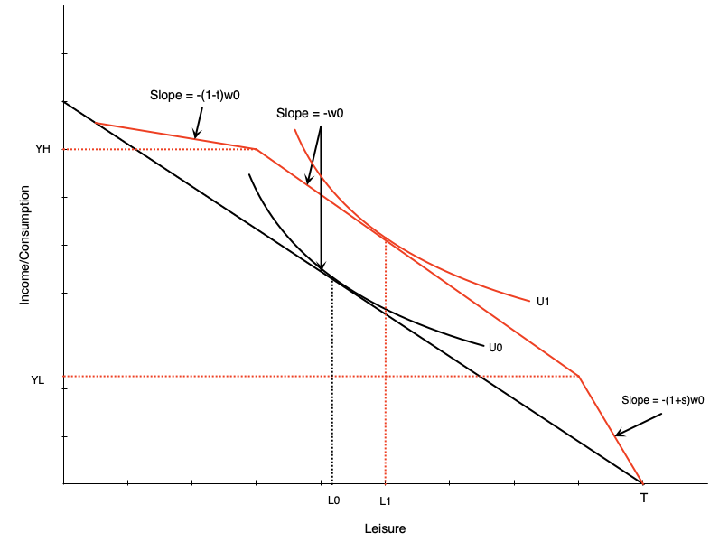
Person initially in middle range:
- Tax credit gives maximum benefit
- Acts like pure income effect
- If leisure is normal good → reduce work hours
Tax Credits: Effect in Phase-In Range
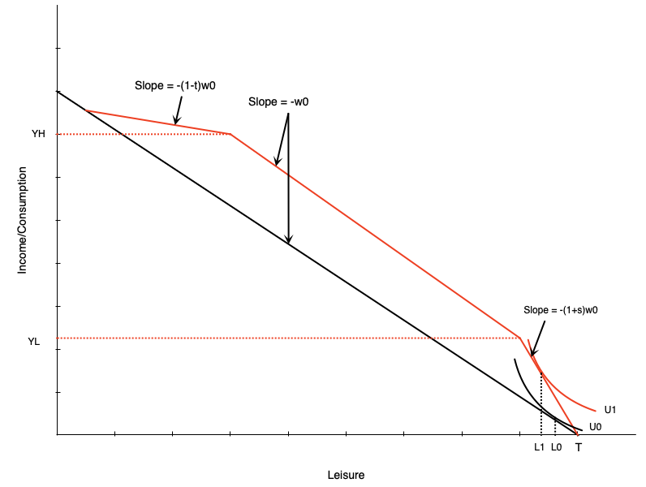
Person in phase-in range:
- Sees increase in effective wage
- Acts like pure wage subsidy
- Income and substitution effects in opposite directions
Warning
Effect on hours is ambiguous
Tax Credits: Effect in Phase-Out Range
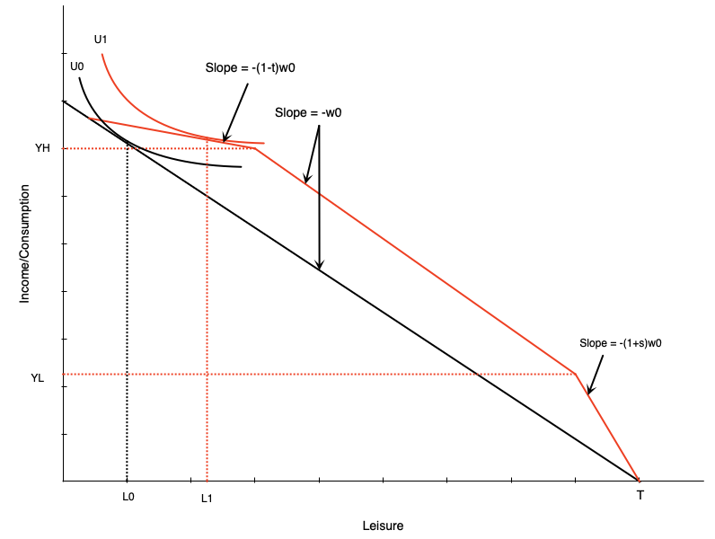
Person in phase-out range:
- Similar to negative income tax
- Income effect → reduce hours ↓
- Substitution effect → reduce hours ↓
Important
Effect on work is unambiguously negative
TODO — The Self-Sufficiency Project
Not yet written
BFGLSS 2026 covers:
- A large Canadian earnings-supplement experiment, listed in Chapter 4 under Empirical Evidence of Incentive Effects. No slides exist for it.
Summary
Summary
Income support programs:
- Provide crucial income support to various groups
- Can create work disincentives in some cases
- Must balance support needs against incentive effects
We examined several programs through the labour supply model:
- Demogrants, welfare, negative income tax
- Wage subsidies and refundable tax credits